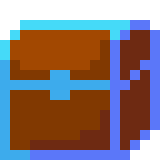
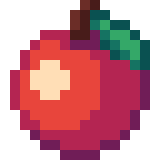
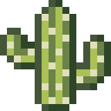
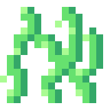
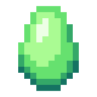
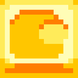

Pozwala użytkownikowi na odbieranie codziennych nagród. Za każdy dzień z rzędu, gdy użytkownik odbiera nagrody passa rośnie. Jeśli użytkownik zapomni odebrać nagrodę jednego dnia, cała passa zostanie zresetowana. Bazową nagrodą jest 5000 monet. Za każdy dzień passy można otrzymać dodatkowe 100 monet. Jeśli passa jest podzielna przez 5 użytkownik otrzyma Zwykłą Skrzynię. Jeśli jest podzielna przez 10 użytkownik otrzyma Rzadką Skrzynię. Jeśli dana passa spełnia oba warunki dawana jest lepsza nagroda.
➖ 0,1% Księga Życia
➕ 0,1% Żelazo
Zmieniono nazwę Pancake na P4ncake.
Zmieniono teksturę dookoła farmy.
Kasana
Dodano nowy dialog w sklepie reflektujący zmianę oferty.
Stara Oferta:
| Cena | Przedmiot |
| 1 Rubin | 100 Token Morex |
| 1 Diament | 100 Token Morex |
| 10 Kaktus | 25 Token Morex |
| 100 Piach | 10 Token Morex |
| 500 Token Morex | 1 Kryształ |
| 1000 Token Morex | 1 Tort Urodzinowy |
Nowa Oferta
| Cena | Przedmiot |
| 10 Kaktus | 3 Lód |
| 3 Szczypce Skorpiona | 1 Złoto |
| 2 Złota | 1 Banknot |
| 1 Kryształ Pustyni | 1 Rubin |
| 50 Piach | 1 Banknot |
| 5 Rubin | 1 Złoty Miecz |





Dodano odznakę związaną z 5 Rocznicą Morex.
Odznaka AMOGUSa otrzymała nową teksturę:

Receptury na Nawóz i Placeholder są niedostępne.
Birthday Spellbook -> Księga Urodzin
Pochodnia: "None" -> "Narzędzie używane do oświetlenia ciemnych jaskiń i lochów. Jest częścią receptury na Kulę Jaskini."
Kula Jaskini: "None" -> "Magiczna kula odblokowywująca dostęp do Jaskini. Znika po użyciu."
Naprawiono brak tłumaczenia działania Ochrony przed Klątwami.